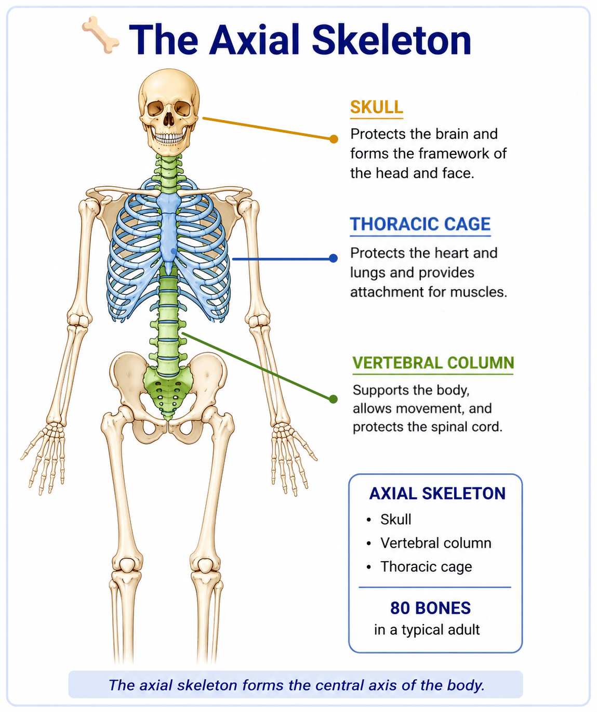
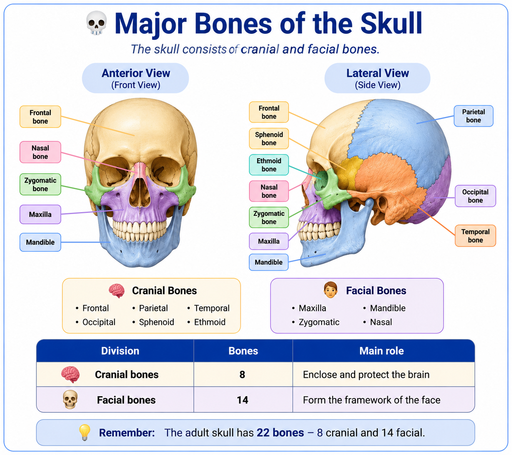
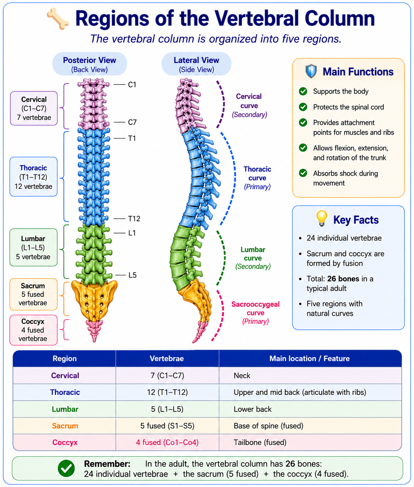
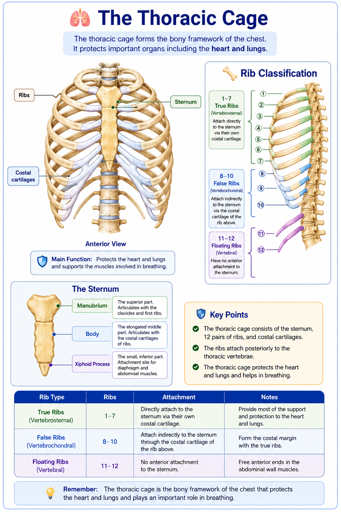

🦴 Axial Skeleton
The axial skeleton forms the central axis of the body. It supports the head, neck, and trunk and protects important organs such as the brain, spinal cord, heart, and lungs.
🔵 What Is the Axial Skeleton?
The axial skeleton forms the body's central axis. It consists mainly of the skull, vertebral column, and thoracic cage.
In a typical adult, the axial skeleton contains 80 bones. Together, these bones provide support and protect structures such as the brain, spinal cord, heart, and lungs.

💀 The Skull
The skull forms the bony framework of the head. It protects the brain and supports the structures of the face.
The adult skull has 22 bones: 8 cranial bones that surround and protect the brain, and 14 facial bones that form the framework of the face.

🦴 The Vertebral Column
The vertebral column supports the body and protects the spinal cord. It also provides attachment points for muscles and ribs.
In the adult, the vertebral column is counted as 26 bones: 24 individual vertebrae, plus the fused sacrum and coccyx.

| Region | Number | Main location |
|---|---|---|
| Cervical | 7 | Neck |
| Thoracic | 12 | Upper and middle back |
| Lumbar | 5 | Lower back |
| Sacrum | 5 fused | Posterior part of the pelvis |
| Coccyx | 4 fused | Tailbone |
🫁 The Thoracic Cage
The thoracic cage forms the bony framework of the chest. It protects important organs including the heart and lungs.
It consists of the sternum, 12 pairs of ribs, and their associated costal cartilages. The ribs attach posteriorly to the thoracic vertebrae.

🦴 Rib Classification
Attach directly to the sternum through their costal cartilages.
Attach indirectly to the sternum through the costal cartilage of the rib above.
Have no anterior attachment to the sternum.
The Sternum
The sternum has three main parts:
- Manubrium
- Body
- Xiphoid process
🧩 Axial Skeleton at a Glance
🧠 Remember
📌 Quick Revision
✅ The axial skeleton forms the central axis of the body.
✅ The typical adult axial skeleton contains 80 bones.
✅ The skull protects the brain and forms the framework of the face.
✅ The adult skull has 22 bones: 8 cranial and 14 facial.
✅ The adult vertebral column is counted as 26 bones.
✅ The vertebral column protects the spinal cord.
✅ The thoracic cage includes the sternum, 12 pairs of ribs, and costal cartilages.
✅ The thoracic cage protects the heart and lungs.
❓ Lesson Quiz
Ready to test your understanding of the axial skeleton?
Complete the quiz to reinforce what you have learned in Lesson 3.2.